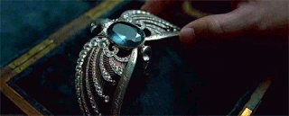

Sabedoria sem medida é o maior tesouro da vida. Se você sabe o que quer, você só precisa pedir pois a Sala Precisa te mostrará. A Corvinal é descrita como a casa dos que tem a mente sempre alerta e de homens de grande espírito e saber. Então seria coincidência o diadema perdido da Corvinal ter sido escondido por Voldemort na Sala Precisa?
Hora de encontrar a próxima horcrux.